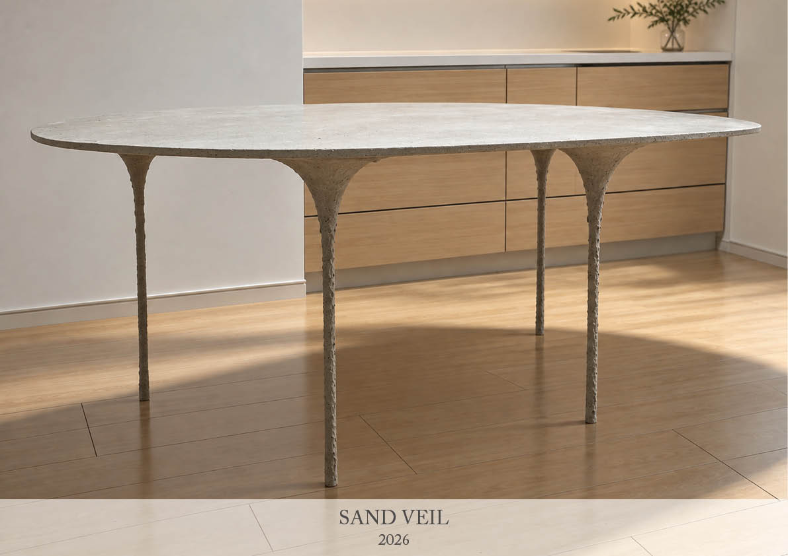
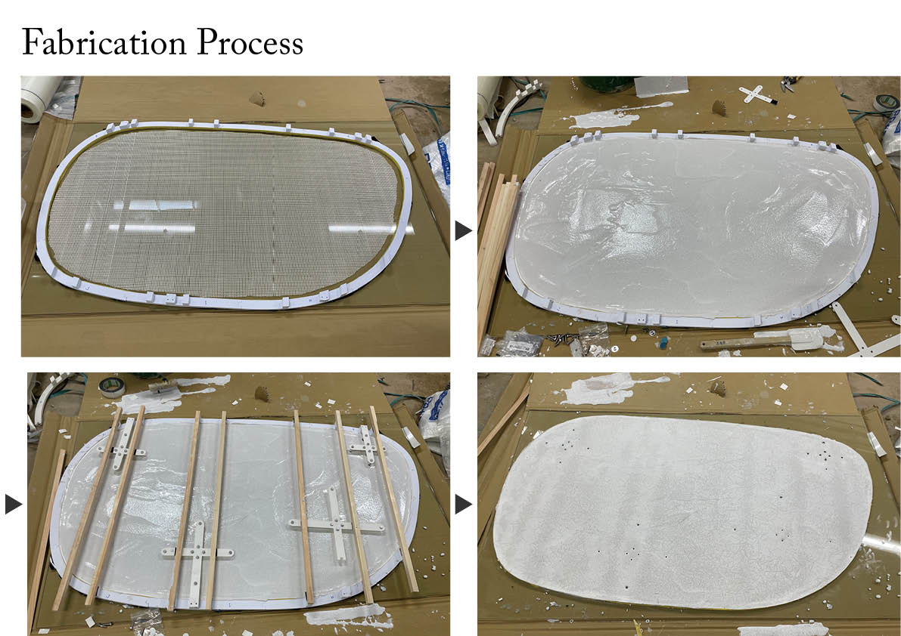
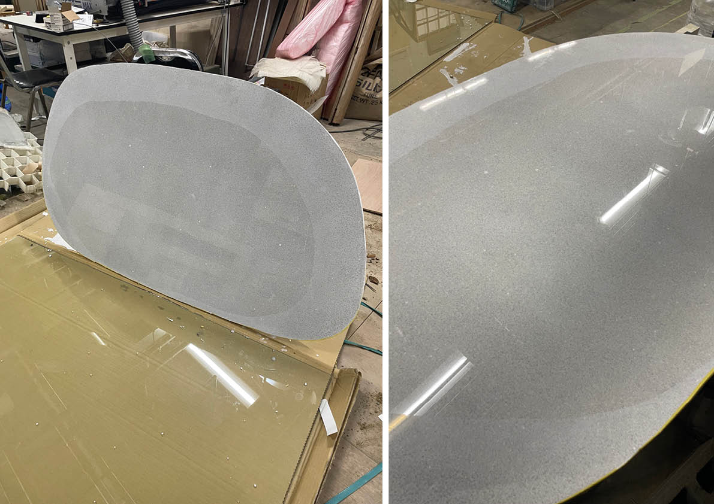
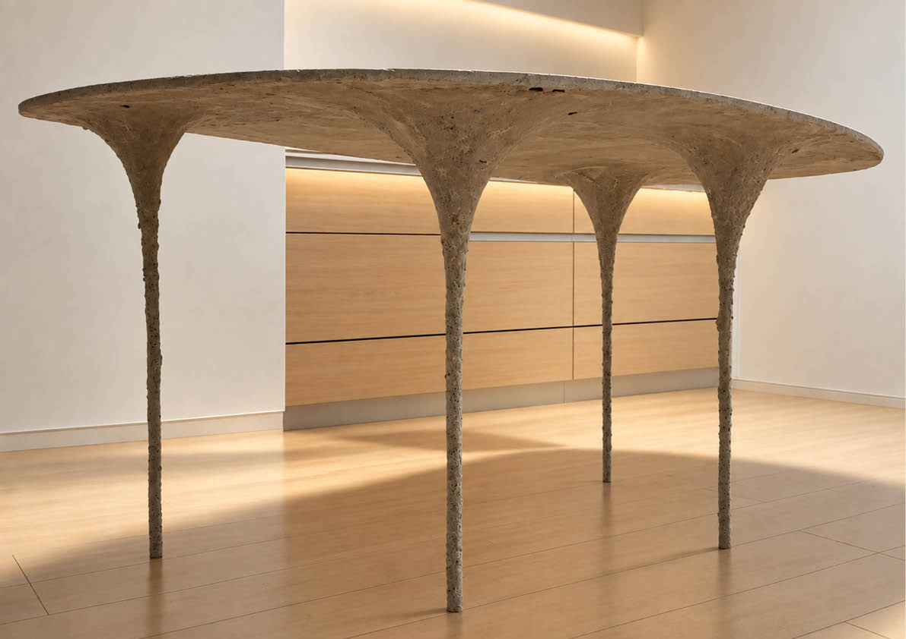

本作品は、砂と、海水から得られるマグネシウム成分を利用した固化材によってつくられた「海のテーブル」である。骨材には砂を用い、酸化マグネシウムと塩化マグネシウムからなる固化材によって硬化させている。セメントを使用せず、砂を主要な素材としてテーブルを構成している。天板の型枠にはガラスを用いている。硬化前の材料をガラス面に直接接触させることで、通常の木製や金属製の型枠では得にくい、砂を用いた素材とは思えないほど平滑でつるつるとした表面をつくり出している。また、繊維によって補強することで、天板は厚さ10mmの薄い断面としている。脚にはφ10mmのスチールパイプを芯材として使用し、その表面に天板と同じ砂の材料を左官で塗り付けている。脚と天板の接合部には3Dプリントによって製作したフレア曲面状の下地を設け、その上から同じ材料を左官することで、細い脚から天板へと滑らかに広がる形状をつくっている。この広がりによって、脚から天板へ荷重を伝達するとともに、天板の局所的な変形を抑える構成としている。
project
SAND VEIL
term
Feb. 2026 - Apr. 2026
type
Furniture
credit
Hiroki Awaji